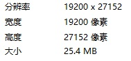
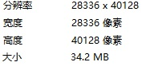

旧版帮助 (Legacy)
主程序
没什么好说的
配置工具
中育飞车助手
─
╳
8 8 4 8
主程序界面样例
图中各元素说明
标题栏颜色由“颜色-窗口标题栏颜色”控制，图中为黑色 (此项将在3.0中弃用)
字符颜色由“颜色-字符颜色”控制，图中为白色，标题栏字符颜色与窗口内字符颜色一致
窗口标题由“基本-窗口标题”控制，图中为“中育飞车助手”
“基本-连接密码-添加圆圈”控制是否为显示的连接密码加上圆圈，例如
⑧ ⑧ ④ ⑧
“基本-Config.ini 路径”将在3.0移除
图片传输
现已确认，在图片大小超过一定值时，图片会受到压缩
若图片大小超过另一值时，不会执行传输
目前传输成功的最大图片

目前传输失败的最小图片